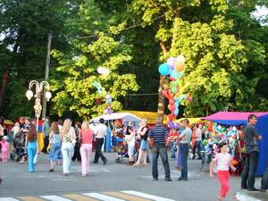
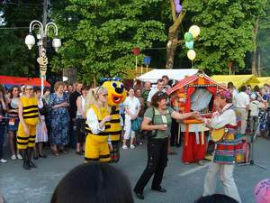
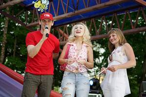
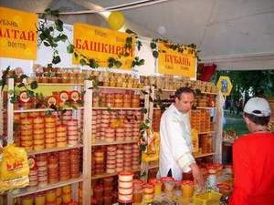
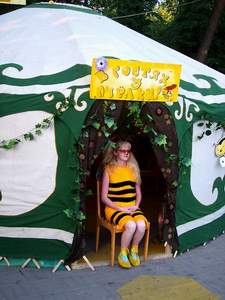

|
VII Международный фестиваль детского творчества "Золотая пчёлка".
Международный фестиваль детского творчества является гордостью нашего города.

А в пятницу с утра уже началась работа: конкурсное прослушивание "Здравствуй, "Золотая пчёлка"! Кипела жизнь в городском парке, работали атракционы, торговля. Завершали этот насыщенный событиями день праздничное открытие фестиваля и фейерверк. Субботний день праздника был, пожалуй, самым насыщенным. В районном Центре культуры продолжалось начатое в пятницу конкурсное прослушивание участников фестиваля, представлявших музыкально-инструментальное и цирковое искусства, а также эстрадных вокальных групп и солистов. Все, кто не был занят в этом, готовились к праздничному шествию.
Красочная колона с цветами, песнями и
танцами, по сигналу духового оркестра, от кинотеатра "Беларусь" начала
своё шествие к площади 50 летия Великого Октября.

Участников фестиваля приветствовали аплодисментами жители и гости нашего города.
А вечер участники и гости фестиваля
провели вместе с компанией МТС - официальным партнёром VII Международного фестиваля детского творчества "Золотая пчёлка".

Молодёжи всех девяти стран понравились выступления Алексея Хлыстова, Анны Шаркуновой, DJ Lexa, Matrix.
Очень обаятельный ведущий не давал скучать зрителям, проводил конкурсы и
вручал подарки от компании.
В воскресное утро начался заключительный
гала-концерт и торжественная церемония награждения победителей. Необычные сладкие призы преподнёс талантливым творческим коллективам представитель культурно-оздоровительного проекта "Мир мёда и здоровья" Ю. Редьков - 30-килограммовую бочку мёда увезли домой гости из Татарстана, 50-килограммовую - образцовые танцевальные коллективы из Бобруйска и 100-килограммовую - ребята из Китая. Представителям делегаций из ближнего и дальнего зарубежья были преподнесены белорусские национальные сувениры из соломки в память о днях, проведённых в нашем городе и о замечательном празднике детства. В "Мире мёда и здоровья".  Участниками фестиваля "Золотая пчёлка" были представители ярмарки "Мир мёда и здоровья" из города Минска. На детском празднике в нашем городе были представлены пчеловоды из Башкирии, Кубани, Алтая, Ростова, Дальнего Востока и Белоруссии. Одна из лучших экспозиций ярмарки "Мир мёда и здоровья" - "Мёд монастырский". Целью проекта является обеспечение белорусского потребителя качественным медом и продуктами пчеловодства, приобщения населения республики к здоровому питанию, содействию реализации программы "За здоровую Беларусь", пропаганда духовно-патриотических ценностей белорусского народа через возрождение и приобщение к национальным традициям, здоровому питанию и здоровому образу жизни. Работала гостиная "В гостях у пчёлки", которую каждый ребёнок мог посетить и получить подарок.  Многие жители и гости нашего города общались с пчеловодами, интересовались пчеловодческим инвентарём. Представители ярмарки "Мир мёда и здоровья" побывали на празднике последнего звонка в СШ №4, сняли о них фильм и подарили по бочонку мёда. Солидные призы лучшим творческим коллективам вручил генеральный продюсер выставки-ярмарки "Мир мёда и здоровья" Юрий Редьков. Стоит отметить, что проект "Мир мёда и здоровья" стартовал 14 августа 2006 года в праздник Медового спаса на площади у кафедрального собора г. Минска по благословению митрополита Минского и Слуцкого Филарета. Его участниками стали Минский Свято-Елисаветинский монастырь, пчеловоды Беларуси, России, Украины. За год проект получил статус международного и превратился в творческое состязание лучших пчеловодов из разных стран.
Важно, что работа проекта "Мир меда и здоровья" осуществляется на протяжении всего года от
Спаса к Спасу и является своеобразным марафоном здоровья на крыльях пчелы.
В наши дни современные врачи и фармацевты все больше обращаются к природным
естественным веществам, используемых в лечебных целях с давних времен. Действие
природных, экологически чистых веществ более мягкое, чем у фармацевтических
средств, но и воздействие на организм является более тонким, гармоничным, без
вредных побочных эффектов.
В Японии, которая занимает по продолжительности жизни первое место в мире, самый высокий показатель
в мире потребления мёда на душу населения - до 3 кг в год. Почти все японцы принимают лекарственные препараты
из продуктов пчеловодства (их население получает бесплатно). В Японии с 1945 года и до
настоящего времени школьники получают ложку мёда с добавлением маточного молочка.
Там успешно работает специализированный институт маточного молочка, производится сильнейший биостимулятор
из маточного молочка, женьшеня и мёда. Выражаю признательность А.Д. Махлову за предоставленные фотографии. |